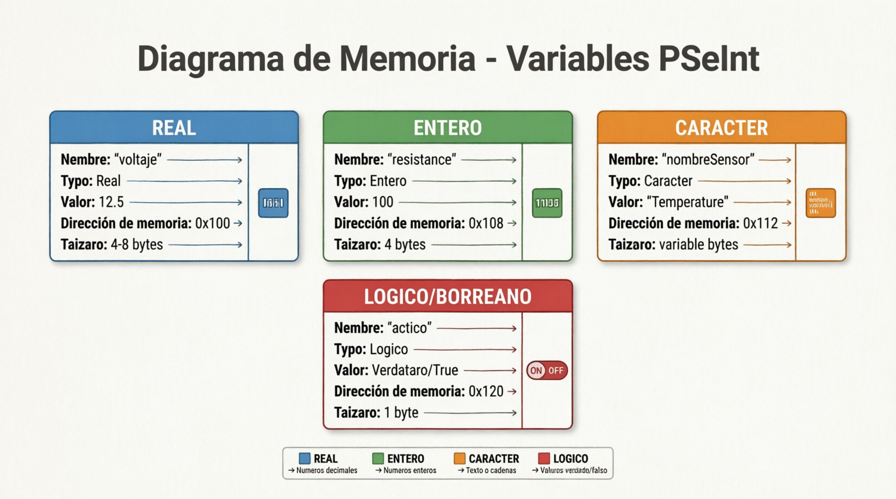
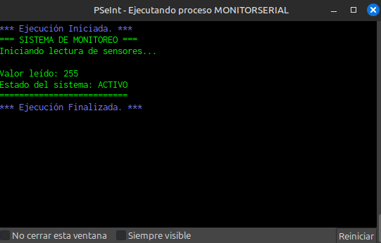
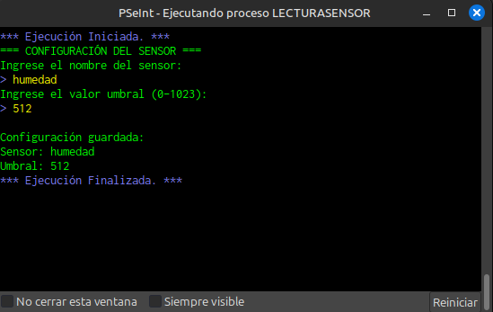
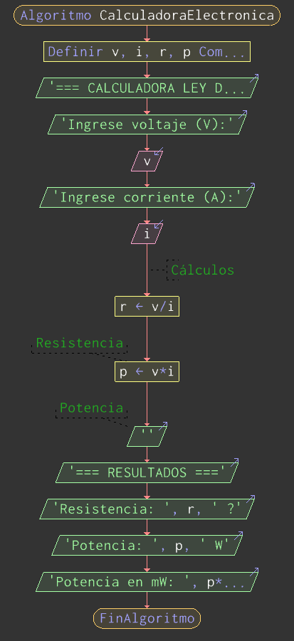
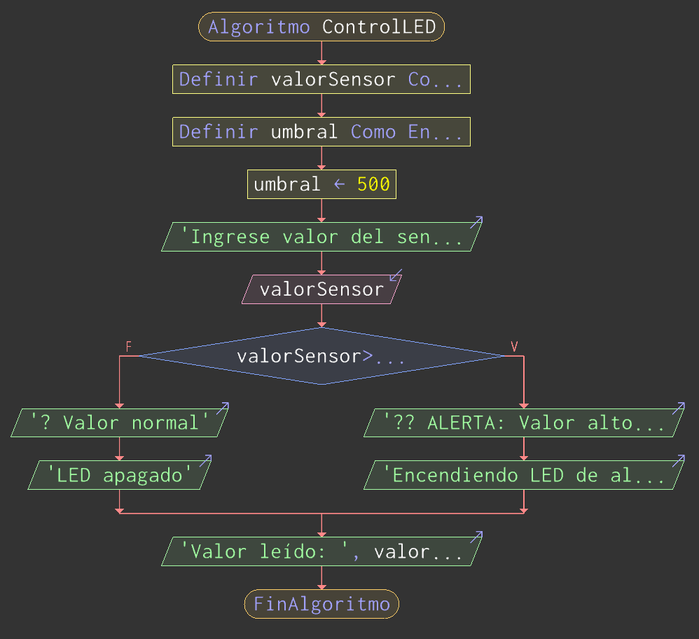
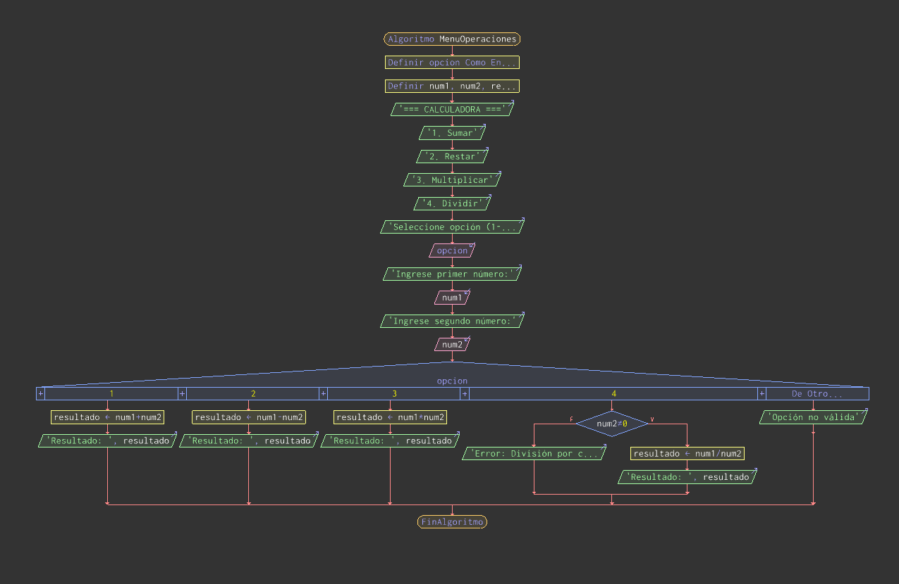
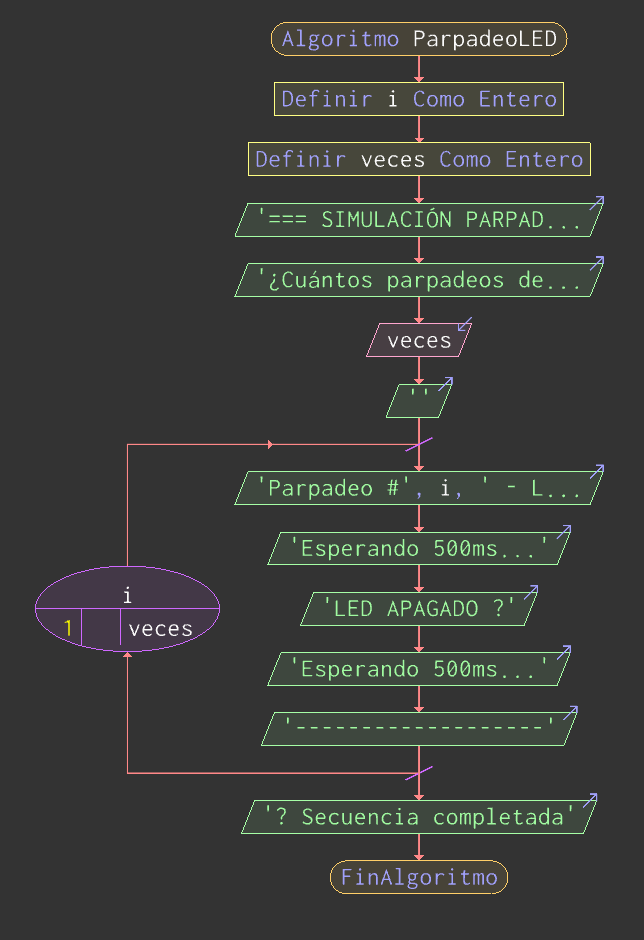
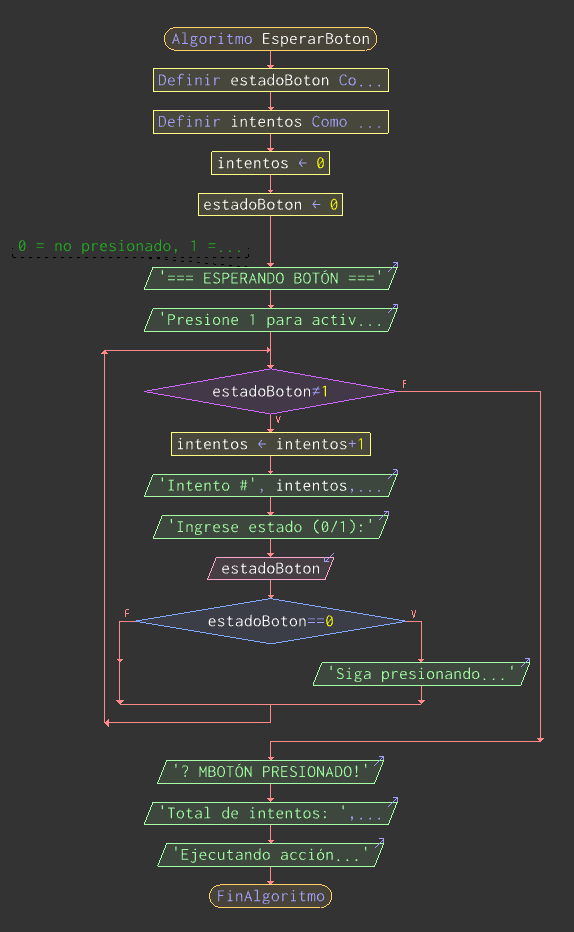

1. Variables y Tipos de Datos
📚 Conceptos Fundamentales
Una variable es un espacio en memoria donde almacenamos datos que pueden cambiar durante la ejecución del programa. En PSeInt, los tipos de datos principales son:
- ENTERO: Números sin decimales (ej: 5, -10, 100)
- REAL: Números con decimales (ej: 3.14, -2.5)
- CARACTER: Un solo carácter o texto (ej: "A", "Hola")
- LÓGICO: Valores verdadero/falso
💡 Importante: En Arduino, estos tipos se traducen a: int, float, char y boolean
💻 Ejemplo en PSeInt
Algoritmo VariablesElectronica
Definir voltaje, corriente Como Real;
Definir resistencia Como Entero;
Definir componente Como Caracter;
Definir circuitoActivo Como Logico;
voltaje <- 12.5;
resistencia <- 100;
componente <- "Resistencia";
circuitoActivo <- Verdadero;
Escribir "Componente: ", componente;
Escribir "Voltaje: ", voltaje, " V";
FinAlgoritmo
🔄 Análisis Paso a Paso
Paso 1: Se declara la variable "voltaje" como Real (puede tener decimales)
Paso 2: Se declara "resistencia" como Entero (solo números completos)
Paso 3: Se asigna el valor 12.5 a la variable voltaje
Paso 4: Se muestra por pantalla el valor de voltaje

📷 Espacio para imagen: 1.png
Diagrama de memoria con variables
🎯 Ejercicio 1
Crea un algoritmo que declare variables para almacenar:
- La temperatura de un sensor (puede tener decimales)
- El número de veces que se presiona un botón
- El estado de un LED (encendido/apagado)
- El nombre del tipo de sensor
Asigna valores iniciales y muéstralos en pantalla.
🎯 Ejercicio 2
Declara variables para calcular la ley de Ohm (V = I × R):
- Corriente (I) en Amperios
- Resistencia (R) en Ohmios
- Voltaje (V) en Voltios
Asigna valores y muestra los tres valores en pantalla.
🤔 Preguntas de Profundización
- ¿Por qué es importante declarar el tipo de dato correcto para cada variable?
- ¿Qué pasaría si intentamos guardar el valor 3.14 en una variable tipo Entero?
- En Arduino, ¿cuántos bytes ocupa una variable tipo Entero y una tipo Real?
2. Escribir Mensajes en Pantalla
📚 La Instrucción Escribir
La instrucción Escribir (o EscribirSinSaltar) permite mostrar información en la pantalla de salida. Es fundamental para:
- Mostrar mensajes al usuario
- Visualizar resultados de cálculos
- Depurar el programa (ver valores de variables)
💡 En Arduino: Esto equivale a Serial.println() y Serial.print()
💻 Ejemplo en PSeInt
Algoritmo MonitorSerial
Definir mensaje Como Caracter;
Definir valorSensor Como Entero;
Escribir "=== SISTEMA DE MONITOREO ===";
Escribir "Iniciando lectura de sensores...";
Escribir "";
valorSensor <- 255;
mensaje <- "Valor leído: ";
Escribir mensaje, valorSensor;
Escribir "Estado del sistema: ", "ACTIVO";
Escribir "==========================";
FinAlgoritmo
🔄 Análisis Paso a Paso
Paso 1: Se muestra el título "=== SISTEMA DE MONITOREO ==="
Paso 2: Se muestra el mensaje de inicio
Paso 3: Se asigna 255 a valorSensor
Paso 4: Se concatena "Valor leído: " con el valor 255 → "Valor leído: 255"
Paso 5: Se muestra el estado final

📷 Espacio para imagen: 2.png
Captura de salida en consola
🎯 Ejercicio 1
Crea un programa que muestre en pantalla una "tarjeta de presentación" de un componente electrónico con:
- Nombre del componente
- Valor nominal
- Tolerancia
- Potencia máxima
Usa líneas separadoras y formato atractivo.
🎯 Ejercicio 2
Simula la salida del monitor serial de Arduino mostrando:
- Un mensaje de inicio "Arduino Ready"
- Tres lecturas de sensor simuladas (valores fijos)
- Un mensaje de finalización
Usa EscribirSinSaltar para mostrar "Lectura: " y el valor en la misma línea.
🤔 Preguntas de Profundización
- ¿Cuál es la diferencia entre Escribir y EscribirSinSaltar?
- ¿Cómo se puede mostrar el valor de una variable junto con texto descriptivo?
- En Arduino, ¿qué función es equivalente a Escribir y qué configuración inicial se necesita?
3. Ingresar Valores desde el Teclado
📚 La Instrucción Leer
La instrucción Leer permite recibir datos del usuario durante la ejecución del programa. El programa se pausa hasta que el usuario ingresa un valor y presiona Enter.
💡 En Arduino: Esto equivale a leer el puerto serial con Serial.parseInt() o Serial.readString()
💻 Ejemplo en PSeInt
Algoritmo LecturaSensor
Definir valorUmbral Como Entero;
Definir nombreSensor Como Caracter;
Escribir "=== CONFIGURACIÓN DEL SENSOR ===";
Escribir "Ingrese el nombre del sensor:";
Leer nombreSensor;
Escribir "Ingrese el valor umbral (0-1023):";
Leer valorUmbral;
Escribir "";
Escribir "Configuración guardada:";
Escribir "Sensor: ", nombreSensor;
Escribir "Umbral: ", valorUmbral;
FinAlgoritmo
🔄 Análisis Paso a Paso
Paso 1: Se muestra el mensaje pidiendo el nombre del sensor
Paso 2: El programa SE DETIENE y espera que el usuario escriba algo
Paso 3: Cuando el usuario presiona Enter, el texto se guarda en "nombreSensor"
Paso 4: Se pide el valor umbral y se lee en la variable valorUmbral
Paso 5: Se muestran los valores ingresados

📷 Espacio para imagen: 3.png
Captura de interacción usuario-programa
🎯 Ejercicio 1
Crea una calculadora de resistencia que:
- Pida al usuario el valor de voltaje (V)
- Pida el valor de corriente (I)
- Calcule la resistencia usando R = V/I
- Muestre el resultado
🎯 Ejercicio 2
Simula la configuración de un temporizador:
- Pide el tiempo de encendido en segundos
- Pide el tiempo de apagado en segundos
- Pide el número de ciclos a repetir
- Muestra un resumen de la configuración
🤔 Preguntas de Profundización
- ¿Qué sucede si el usuario ingresa un texto cuando se espera un número?
- ¿Cómo se puede validar que el valor ingresado esté en un rango correcto?
- En Arduino, ¿cómo se lee datos del puerto serial y qué diferencias hay con PSeInt?
4. Programas con Cálculos Matemáticos
📚 Operadores Aritméticos
PSeInt permite realizar operaciones matemáticas básicas y avanzadas:
- Suma: +
- Resta: -
- Multiplicación: *
- División: /
- Módulo (resto): MOD
- Potencia: ^
💡 Aplicación en electrónica: Ley de Ohm, cálculo de potencia, divisores de voltaje, etc.
💻 Ejemplo en PSeInt
Algoritmo CalculadoraElectronica
Definir v, i, r, p Como Real;
Escribir "=== CALCULADORA LEY DE OHM ===";
Escribir "Ingrese voltaje (V):";
Leer v;
Escribir "Ingrese corriente (A):";
Leer i;
r <- v / i;
p <- v * i;
Escribir "";
Escribir "=== RESULTADOS ===";
Escribir "Resistencia: ", r, " Ω";
Escribir "Potencia: ", p, " W";
Escribir "Potencia en mW: ", p * 1000, " mW";
FinAlgoritmo
🔄 Análisis Paso a Paso
Paso 1: Se declaran 4 variables tipo Real: v, i, r, p
Paso 2: Se lee el voltaje (ej: 12) y la corriente (ej: 0.5)
Paso 3: Se calcula r = 12 / 0.5 = 24 Ω
Paso 4: Se calcula p = 12 * 0.5 = 6 W
Paso 5: Se muestran los resultados incluyendo conversión a mW

📷 Espacio para imagen: 4.png
Diagrama de flujo de cálculos
🎯 Ejercicio 1
Crea un programa que calcule el valor de un divisor de voltaje:
- Pide el voltaje de entrada (Vin)
- Pide el valor de R1 y R2
- Calcula Vout = Vin × (R2 / (R1 + R2))
- Muestra el resultado
🎯 Ejercicio 2
Calcula la resistencia equivalente:
- Pide al usuario si las resistencias están en SERIE o PARALELO
- Pide 3 valores de resistencia
- Calcula: Serie (R1+R2+R3) o Paralelo (1/(1/R1+1/R2+1/R3))
- Muestra el resultado
🤔 Preguntas de Profundización
- ¿Qué sucede al dividir dos números enteros en PSeInt?
- ¿Cómo se calcula la raíz cuadrada en PSeInt?
- ¿Qué operador usarías para saber si un número es par o impar?
5. Estructura Condicional SI-ENTONCES
📚 Toma de Decisiones
La estructura Si-Entonces permite ejecutar diferentes bloques de código según se cumpla o no una condición. Es fundamental para:
- Comparar valores de sensores
- Activar/desactivar dispositivos
- Validar datos ingresados
💡 En Arduino: if, else if, else
💻 Ejemplo en PSeInt
Algoritmo ControlLED
Definir valorSensor Como Entero;
Definir umbral Como Entero;
umbral <- 500;
Escribir "Ingrese valor del sensor (0-1023):";
Leer valorSensor;
Si valorSensor > umbral Entonces
Escribir "⚠️ ALERTA: Valor alto detectado";
Escribir "Encendiendo LED de alarma...";
SiNo
Escribir "✓ Valor normal";
Escribir "LED apagado";
FinSi
Escribir "Valor leído: ", valorSensor;
FinAlgoritmo
🔄 Análisis Paso a Paso
Paso 1: Se establece el umbral en 500
Paso 2: Se lee el valor del sensor (ej: 650)
Paso 3: Se evalúa: ¿650 > 500? → VERDADERO
Paso 4: Se ejecuta el bloque Entonces (alarma)
Paso 5: Se salta el bloque SiNo y continúa después de FinSi
Variante: Múltiples Condiciones
Si temperatura < 0 Entonces
Escribir "Congelando";
SiNo Si temperatura < 20 Entonces
Escribir "Frío";
SiNo Si temperatura < 30 Entonces
Escribir "Agradable";
SiNo
Escribir "Calor";
FinSi

📷 Espacio para imagen: 5.png
Diagrama de flujo SI-ENTONCES
🎯 Ejercicio 1
Crea un sistema de protección que:
- Lea un valor de corriente
- Si es mayor a 2A, muestre "SOBRECARGA - Abrir relay"
- Si está entre 1A y 2A, muestre "Carga normal"
- Si es menor a 1A, muestre "Carga baja"
🎯 Ejercicio 2
Simula un termostato:
- Lee la temperatura actual
- Si temp < 18°C: "Encender calefacción"
- Si temp > 25°C: "Encender aire acondicionado"
- Si no: "Sistema en standby"
🤔 Preguntas de Profundización
- ¿Qué operadores de comparación existen en PSeInt? (>, <, >=, <=, =, !=)
- ¿Cómo se combinan múltiples condiciones con Y (AND) y O (OR)?
- ¿Qué es un "if anidado" y cuándo se usa?
6. Estructura SEGÚN (Switch-Case)
📚 Selección Múltiple
La estructura Según permite seleccionar entre múltiples opciones basadas en el valor de una variable. Es más clara que múltiples Si-Entonces cuando hay muchas opciones.
💡 En Arduino: switch-case
💻 Ejemplo en PSeInt
Algoritmo MenuOperaciones
Definir opcion Como Entero;
Definir num1, num2, resultado Como Real;
Escribir "=== CALCULADORA ===";
Escribir "1. Sumar";
Escribir "2. Restar";
Escribir "3. Multiplicar";
Escribir "4. Dividir";
Escribir "Seleccione opción (1-4):";
Leer opcion;
Escribir "Ingrese primer número:";
Leer num1;
Escribir "Ingrese segundo número:";
Leer num2;
Segun opcion Hacer
1:
resultado <- num1 + num2;
Escribir "Resultado: ", resultado;
2:
resultado <- num1 - num2;
Escribir "Resultado: ", resultado;
3:
resultado <- num1 * num2;
Escribir "Resultado: ", resultado;
4:
Si num2 != 0 Entonces
resultado <- num1 / num2;
Escribir "Resultado: ", resultado;
SiNo
Escribir "Error: División por cero";
FinSi
De Otro Modo:
Escribir "Opción no válida";
FinSegun
FinAlgoritmo
🔄 Análisis Paso a Paso
Paso 1: Se muestra el menú y se lee la opción (ej: 3)
Paso 2: Se leen los dos números (ej: 5 y 4)
Paso 3: Según evalúa: opcion = 3
Paso 4: Salta directamente al caso 3
Paso 5: Ejecuta: resultado = 5 * 4 = 20
Paso 6: Muestra el resultado y sale de Según

📷 Espacio para imagen: 6.png
Diagrama de flujo SEGÚN
🎯 Ejercicio 1
Crea un selector de componentes:
- Opción 1: Resistor - muestra código de colores
- Opción 2: Capacitor - muestra unidades (pF, nF, uF)
- Opción 3: LED - muestra polaridad y voltaje
- Opción 4: Transistor - muestra tipo NPN/PNP
🎯 Ejercicio 2
Simula un multímetro digital:
- Menú: 1-Voltaje, 2-Corriente, 3-Resistencia
- Según la opción, pide el valor medido
- Muestra el valor con la unidad correcta (V, A, Ω)
- Incluye opción "De Otro Modo" para opción inválida
🤔 Preguntas de Profundización
- ¿Cuándo es mejor usar Según en lugar de múltiples Si-Entonces?
- ¿Qué pasa si no se incluye "De Otro Modo" y la opción no coincide?
- ¿Se puede usar Según con variables de tipo Caracter (texto)?
7. Ciclo PARA (For)
📚 Repetición Controlada
El ciclo Para se usa cuando sabemos exactamente cuántas veces queremos repetir un bloque de código. Es ideal para:
- Recorrer arrays o listas
- Generar secuencias
- Realizar un número fijo de iteraciones
💡 En Arduino: for(inicialización; condición; incremento)
💻 Ejemplo en PSeInt
Algoritmo ParpadeoLED
Definir i Como Entero;
Definir veces Como Entero;
Escribir "=== SIMULACIÓN PARPADEO LED ===";
Escribir "¿Cuántos parpadeos desea?";
Leer veces;
Escribir "";
Para i <- 1 Hasta veces Hacer
Escribir "Parpadeo #", i, " - LED ENCENDIDO 💡";
Escribir "Esperando 500ms...";
Escribir "LED APAGADO ⚫";
Escribir "Esperando 500ms...";
Escribir "-------------------";
FinPara
Escribir "✅ Secuencia completada";
FinAlgoritmo
🔄 Análisis Paso a Paso (si veces=3)
Iteración 1: i=1, se ejecuta el bloque, se muestra "Parpadeo #1"
Iteración 2: i=2, se ejecuta el bloque, se muestra "Parpadeo #2"
Iteración 3: i=3, se ejecuta el bloque, se muestra "Parpadeo #3"
Fin: i=4, ya no cumple i<=3, sale del ciclo
Variante: Ciclo con incremento personalizado
Para i <- 0 Hasta 10 Con Paso 2 Hacer
Escribir "Valor: ", i;
FinPara
Para i <- 10 Hasta 1 Con Paso -1 Hacer
Escribir "Cuenta regresiva: ", i;
FinPara

📷 Espacio para imagen: 7.png
Diagrama de ciclo PARA
🎯 Ejercicio 1
Genera una tabla de conversión:
- Usa un ciclo Para de 0 a 10
- Para cada valor, calcula su equivalente en binario (solo muestra el número)
- Muestra: "Decimal: X - Valor"
🎯 Ejercicio 2
Simula un semáforo:
- Ciclo de 5 vueltas
- Cada vuelta: Rojo (3s), Amarillo (1s), Verde (3s)
- Muestra el estado actual y el tiempo
- Indica el número de ciclo
🤔 Preguntas de Profundización
- ¿Qué pasa si el valor inicial es mayor que el valor final?
- ¿Cómo se crea un ciclo infinito con Para?
- ¿Se puede modificar la variable de control dentro del ciclo? ¿Es recomendable?
8. Ciclo MIENTRAS (While)
📚 Repetición Condicional
El ciclo Mientras repite un bloque mientras se cumpla una condición. A diferencia de Para, NO sabemos cuántas veces se repetirá. Es ideal para:
- Esperar una condición externa (botón, sensor)
- Validar entrada de datos
- Programas que deben ejecutarse continuamente
💡 En Arduino: while() y do-while(). El loop() principal es esencialmente un while(true)
💻 Ejemplo en PSeInt
Algoritmo EsperarBoton
Definir estadoBoton Como Entero;
Definir intentos Como Entero;
intentos <- 0;
estadoBoton <- 0;
Escribir "=== ESPERANDO BOTÓN ===";
Escribir "Presione 1 para activar, 0 para mantener:";
Mientras estadoBoton != 1 Hacer
intentos <- intentos + 1;
Escribir "Intento #", intentos, " - Botón no presionado";
Escribir "Ingrese estado (0/1):";
Leer estadoBoton;
Si estadoBoton == 0 Entonces
Escribir "Siga presionando...";
FinSi;
FinMientras
Escribir "✅ ¡BOTÓN PRESIONADO!";
Escribir "Total de intentos: ", intentos;
Escribir "Ejecutando acción...";
FinAlgoritmo
🔄 Análisis Paso a Paso
Paso 1: Se inicializa estadoBoton=0 e intentos=0
Paso 2: Se evalúa: ¿0 != 1? → VERDADERO, entra al ciclo
Paso 3: intentos=1, se pide ingresar estado
Paso 4: Usuario ingresa 0 → se repite el ciclo
Paso 5: Usuario ingresa 1 → ¿1 != 1? → FALSO
Paso 6: Sale del ciclo y muestra mensaje final
Ejemplo: Validación de datos
Algoritmo ValidarRango
Definir valor Como Entero;
valor <- 0;
Mientras valor < 1 O valor > 100 Hacer
Escribir "Ingrese valor (1-100):";
Leer valor;
Si valor < 1 O valor > 100 Entonces
Escribir "❌ Valor fuera de rango. Intente nuevamente.";
FinSi;
FinMientras
Escribir "✓ Valor válido: ", valor;
FinAlgoritmo

📷 Espacio para imagen: 8.png
Diagrama de ciclo MIENTRAS
🎯 Ejercicio 1
Simula la carga de un capacitor:
- Voltaje inicial = 0V
- Mientras voltaje < 12V:
- Incrementa voltaje en 1V
- Muestra "Cargando: X V"
- Al finalizar: "Capacitor cargado al 100%"
🎯 Ejercicio 2
Crea un menú repetitivo:
- Mientras la opción sea diferente de 0:
- Muestra menú: 1-Medir, 2-Calibrar, 3-Configurar, 0-Salir
- Ejecuta la opción seleccionada
- Al ingresar 0, muestra "Sistema apagado"
🤔 Preguntas de Profundización
- ¿Qué es un "ciclo infinito" y cómo se puede evitar?
- ¿Cuál es la diferencia entre Mientras y Mientras-Que (do-while)?
- ¿Cuándo es mejor usar Mientras en lugar de Para?
- En Arduino, ¿por qué el loop() es esencialmente un while(true)?